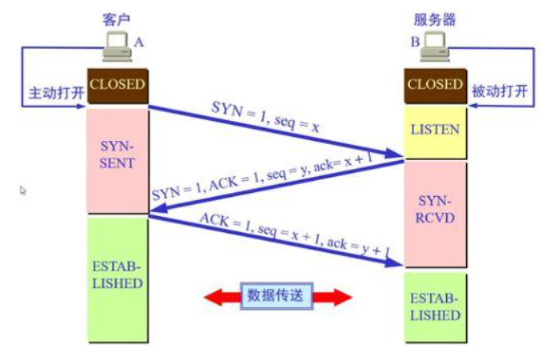
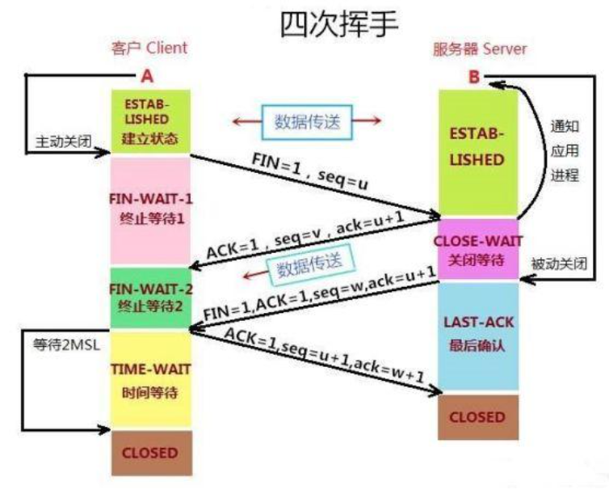

计算机网络基础
一、书籍推荐：《图解HTTPS》《HTTP权威指南》
二、HTTP缓存
HTTP缓存分为强缓存和协商缓存：
先通过Cache-control验证强缓存是否可用，可用就直接读取缓存，否则进入协商缓存阶段，发起http请求，服务器通过
请求头是否有If-Modified-Since 和 If-None-Match 条件请求字段检查资源是否更新：
如果资源更新，那么就返回资源和200状态码；
如果资源未更新，那么告诉浏览器直接使用缓存获取资源。
三、http常用状态码以及使用场景
1xx: 表示当前是协议的中间态，还需要后续请求
2xx:表示请求成功
3xx:表示重定向状态
4XX:表示请求报文出错
5xx: 表示服务器错误
常用状态码：
101: 切换请求协议，从http切换到websocket
200: 请求成功
301 永久重定向：会缓存
302 临时重定向：不会缓存
304 协商缓存命中
403 服务器禁止访问
404 资源未找到
400 请求错误
500 服务端错误
遇到302状态码的某些场景：
302表示临时重定向，这个资源只是暂时不能被访问，但是之后过一段时间还是可以继续访问，一般是访问某个
网站的资源需要权限时，会需要用户登录，跳转到登录页面之后还可以继续访问。
301是永久重定向，跳转到一个新网站，但是301代表这个被访问的地质资源被永久移除了，以后都不会访问这个地址，
搜索引擎抓取的时候也会使用新的地址替换这个旧地址。可以在响应的location首部去获取到返回的地址。
四、 HTTP常用请求方式
http/1.1 规定的请求方式：
1.GET: 获取数据，参数在url上
2.POST: 提交数据，比如登录页面登录用户信息时使用
3.PUT:修改数据
4.HEAD: 获取资源的元信息
5.DELETE: 删除数据
6.CONNECT: 建立连接通道，用在代理服务器
7.OPTIONS: 列出可对资源实行的请求方法，常用于跨域
8.TRACE: 追踪请求-响应的传输路径
五、 网络分层
OSI体系结构： 7.应用层 6.表示层 5.会话层 4.传输层 3.网络层 2.链路层 1.物理层
TCP/IP结构： 4.应用层 3. 运输层(TCP,UDP) 2.网络层（IP) 1.网络接口层
五层体系结构： 5.应用层 4.运输层 3.网络层 2.链路层 1.物理层
六、 HTTPS？
HTTPS是在HTTP和TCP之间建立的一个安全层，HTTP与TCP通信时必须经过一个安全层，对数据进行加密，然后将加密后的数据包传给TCP，
相应的TCP必须将数据包解密，才能传给上面的HTTP.
浏览器传输一个client_random和加密方法列表，服务器收到后给浏览器传一个server_random、加密方法列表和数字证书（包含公钥），
然后浏览器对数字证书进行验证，如果验证通过，则生成一个pre_random,然后用公钥加密传给服务器，服务器用client_random、server_random和pre_random,
使用公钥加密生成secret，之后的传输就使用secret作为密钥来进行数据的加解密。
七、三次握手

第一次握手：一开始都处于CLOSED状态，客户端主动发起连接请求，发送syn包（seq=j）到服务器，并进入SYN_SENT状态（syn:同步序列编号）
第二次握手：服务器收到syn包，确认客户端的ACK(ack=j+1),同时发送一个SYN包（seq=k），即SYN+ACK包，而后进入SYN_RECV状态；
第三次握手：客户端收到服务器的ACK+SYN包，向服务器发送确认包ACK（ack=k+1）,进入ESTABLISHED（TCP连接成功）状态，完成三次握手，客户端与服务端开始传输数据。
SYN需要对端确认，所以ACK的序列化要加一，凡是需要对端确认的，要消耗TCP报文的序列化八、四次挥手

一开始都处于ESTABLISHED状态，客户端发送报文FIN=1和seq=x,进入FIN_WAIT_1状态；服务端收到报文后，发送确认报文ack=x+1，seq=y,ACK=1，然后进入CLOSE_WAIT状态；
客户端收到服务端的确认报文之后进入FIN_WAIT_2状态；而后服务端再次发送seq=z，FIN=1，ack=x+1,进入LAST-ACK状态,等待客户端确认；客户端收到后发出确认ACK=1，ack=z+1,seq=x+1,进入TIME_WAIT状态，经过2MSL(最长报文段寿命)事件后，才进入CLOSED状态，
然后发送ACK给服务端，服务端收到后进入CLOSED状态。
为什么要等待2MSL？
2MSL是两倍的MSL(Maximum Segment Lifetime),MSL是一个片段在网络中最大的存活时间，2MSL就是一个发送和一个回复所要的最大时间，如果直到2MSL客户端都没收到FIN，就推断ACK已被成功接收，结束TCP连接。
在交互过程中如果数据传送完了，如果不想断开两端连接可以在HTTP的响应体的Connection字段指定为keep-alive
九、TCP滑动窗口（分为发送窗口和接收窗口）
在TCP连接中，对于发送端和接收端，TCP需要把发送的数据放到发送缓存区，将接收的数据放到接收缓存区。经常会发生发送端发送过多而接收端无法接收的情况，所以需要流量控制，也就是根据接收缓存区的大小来控制发送端的发送。如果接收缓存区已经满了，此时发送端就不需要继续发送数据了。